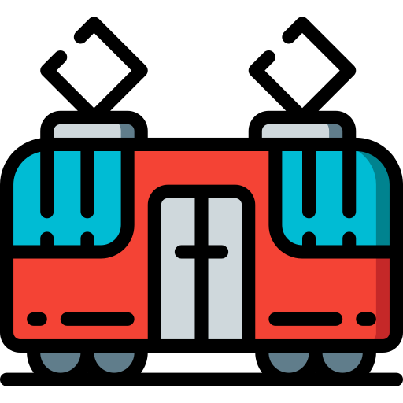

Kirjeldus
Selle traditsiooni järgi avab Tallinna jõuluturg sel aastal oma kabiinid, et anda meile rõõm nautida jõulud, mis on iseloomulikud muinasjutule. Raekoja platsil suurepärane kuus, jõulude sümbol ja meie linn on uhke olla esimene koht maailmas, kus püstitati jõulupuu: 1441. aastal ei ole enam mitte vähem!

Viimastel aastatel Raekoja platsil, ilus keskaegne hoone, on saanud puhkus ja sümbol turism, mitte ainult Eestis, vaid kogu Euroopas ning on arvestatud üks parimaid turul Jõulud mandrilt ja maailmast, mis saab igal aastal maailmas ligikaudu miljonit külastajat. Garanteeritud lõbus Santa Claus, mis annab lastele võimaluse lugeda salmid lihtsam lastele (värsid luule ja luule on traditsioone meie riigis, kes jagavad meie Balti naabrid Läti ja Leedu). Erinevatel kioskidel võite talvel osta käsitsi valmistatud kõrgekvaliteedilisi tarvikuid, nagu kindad või sallid. Ja kui sa oled natuke väsinud nähes väljaanded ja sa tead magu muutub vihaseks, saate rahuldada oma isu mõned maitsev suhkrustatud ingver või röstitud eestlased. Võite proovida ka Bellweini - tüüpilise jooki Baltimaadest, Skandinaaviast ja Venemaalt. Või rahvusvaheline kuum šokolaad, mis on alati väga hea. Jõulud on olemas ja seda toetavad erilised kultuuriprogrammid. Nädalavahetustel, erinevad bändid Eestist ja välismaalt esitatakse turule laval ja iga pühapäev Advent küünal, samal ajal kui Eesti linnapea ja Vene luterlike kirikute pastorid ootel kõnede ruutu inimesed Oota 2019 eriprogrammiga!
Tallinna jõuluturg tervitab kõiki avatud kätega. Häid jõule
Kalender
Turg avab oma uksed alates 16. novembrist 7. jaanuarini iga päev kella 10.00-20.00. Kuumad joogid (kuum vein) saab nautida pühapäevast neljapäevani kuni kella 22:00 ning reedeti ja laupäeviti kuni kella 23.00ni. Jõuluprogramm: reede kell 15.00 kuni 07.00, laupäeviti ja pühapäeviti kell 12.00 kuni 14.00. Alates 2. detsembrist tervitab Santa Claus lapsi esmaspäevast pühapäevani kell 12.00. 19:00


Osalejad
Iga nädalavahetusel osalevad meie riigis ja välismaal erinevad rahvusrühmad, kes on valmis andma meile elava näituse. Osalejad on järgmised:
Reede 16 November:Viisuveeretajad (Eesti), Carolina (Ameerika Ühendriigid)
Laupäev 17 November:Black and White (Iirimaa), Mariliis Jögeva (Eesti) Solas (Iirimaa), Tantsusarvikud (Eesti)
Teisipäev 18 November:Pühalepa (Eesti), RAPTI (Kreeka)
Reede 23 November:Leesikad (Eesti)
Laupäev 24 November:Juhukse (Eesti), Zahira (Eesti)
Teisipäev 25 November:Cantitores (Soome), Kirmas (Eesti)
Reede 30 November:Nömme (Eesti), Söleke (Eesti), Free Flow Studio (Eesti)
 Laupäev 1 Detsember:Moroshka (Venemaa), Tammed ja Toomed (Eesti), Harku Harakad (Eesti)
Laupäev 1 Detsember:Moroshka (Venemaa), Tammed ja Toomed (Eesti), Harku Harakad (Eesti)
Teisipäev 2 Detsember:Kopli (Eesti), Tallinna luterlike koguduste koorid.
Reede 7 Detsember:Vöör ja Ahter (Eesti), RAPTI (Kreeka)
Laupäev 8 Detsember:Kuu (Eesti), Panter (Eesti), KT Stuudio (Eesti)
Teisipäev 9 Detsember:Ellerhein (Eesti), Ingliskad (Eesti)
Reede 14 Detsember:Köku (Eesti), VAT Stuudio (Eesti)
Laupäev 15 Detsember:Tuisuline (Eesti), Happy Feet (Uus Maa-Ala), Jürid-Maarid (Eesti)
Teisipäev 16 Detsember:Siki (Eesti), MYDANCE (Rootsi)
Reede 21 Detsember:Desiree (Eesti)
Laupäev 22 Detsember:Kolgaküla Laneerid (Eesti), Free Flow Studio (Eesti)
Teisipäev 23 Detsember:Löoke (Estonia), Modus (Saksa)
Reede 28 Detsember:LTF (Ameerika Ühendriigid), Alhambra (Ameerika Ühendriigid), Asmarah (Eesti), Valeria Nikolajeva (Venemaa)
Laupäev 29 Detsember:Beatrice Nebis (Eesti), Aler (Gruusia)
Teisipäev 30 Detsember:Modus (Saksa), Lili Adeni (Eesti)
Hommikul 31 Detsember:Uusaasta eriline programm, Nömme Huvikooli (Eesti)
Reede 4 Jaanuar:Terek (Venemaa), Jagody (Poola), Sakala Laululapsed (Eesti)
Laupäev 5 Jaanuar:Pääsuke (Eesti), Kodu (Eesti), Leigarid (Eesti)
Teisipäev 6 Jaanuar:Koit (Eesti), Juri Zaljubovski (Venemaa), Mustad Kassi (Eesti).Turu sulgemine
Koht
Raekoja plats asub Tallinna ajaloolise keskuse südames. Neile turistidele, kes on väljaspool keskust või residentsi äärelinnas, on linna bussi- ja trammipeatused vaid 5-minutilise jalutuskäigu kaugusel. Trammiliin 4 ühendab Raekoja platsi otse lennujaama.
 Lähim bussipeatus: Viru (liinid 21,21B,40,41,48,73)
Lähim bussipeatus: Viru (liinid 21,21B,40,41,48,73)
Lähim trammipeatus: Viru (liinid 3 ja 4)